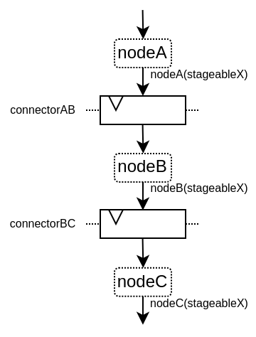
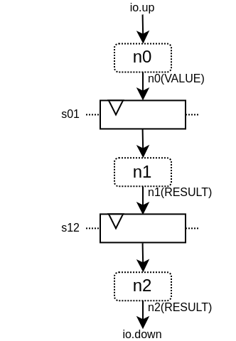
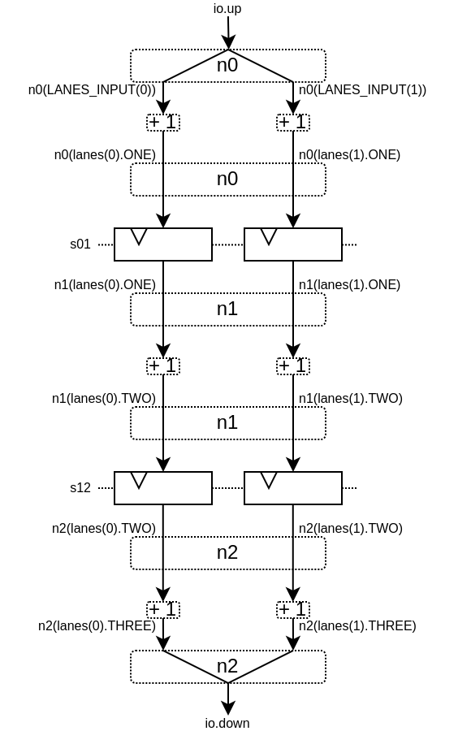
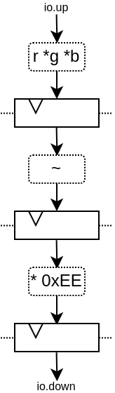

简介
spinal.lib.misc.pipeline提供了一套流水线API。相对于手动流水线它的主要优点是：
您不必预先准备好整个流水系统中所需的所有信号元素。您可以根据设计需要，以更特别的方式创建和使用可分级的信号，而无需重构所有中间阶段来处理信号
流水线的信号可以利用SpinalHDL的强大参数化能力，并且如果设计构建中不需要特定的参数化特征，则可以进行优化/移除，而不需要以显著的方式修改流水系统设计或项目代码库。
Manual retiming is much easier, as you don’t have to handle the registers / arbitration manually
它会自行管理仲裁器
API由4个主要部分组成：
Node：表示管道中的层
Link：允许节点相互连接
Builder：生成整个管道所需的硬件
Payload：用于获取流水线的节点上的硬件信号
重要的是，Payload不是硬件数据/信号实例，而是用于检索流水线在节点中数据/信号的关键，并且流水线构建器随后将在节点之间的每次给定Payload出现时自动互连/流水线。
以下是一个用于阐述的例子：
{kind=link}
以下是关于此API的视频：
简单示例
下面是一个简单的例子，它只使用了基本的API：
import spinal.core._
import spinal.core.sim._
import spinal.lib._
import spinal.lib.misc.pipeline._
class TopLevel extends Component {
val io = new Bundle {
val up = slave Stream (UInt(16 bits))
val down = master Stream (UInt(16 bits))
}
// Let's define 3 Nodes for our pipeline
val n0, n1, n2 = Node()
// Let's connect those nodes by using simples registers
val s01 = StageLink(n0, n1)
val s12 = StageLink(n1, n2)
// Let's define a few Payload things that can go through the pipeline
val VALUE = Payload(UInt(16 bits))
val RESULT = Payload(UInt(16 bits))
// Let's bind io.up to n0
io.up.ready := n0.ready
n0.valid := io.up.valid
n0(VALUE) := io.up.payload
// Let's do some processing on n1
n1(RESULT) := n1(VALUE) + 0x1200
// Let's bind n2 to io.down
n2.ready := io.down.ready
io.down.valid := n2.valid
io.down.payload := n2(RESULT)
// Let's ask the builder to generate all the required hardware
Builder(s01, s12)
}
这将产生以下硬件：
{kind=link}
下面是一个仿真波形：
下面是相同的示例，但使用了更多的API：
import spinal.core._
import spinal.core.sim._
import spinal.lib._
import spinal.lib.misc.pipeline._
class TopLevel extends Component {
val VALUE = Payload(UInt(16 bits))
val io = new Bundle {
val up = slave Stream(VALUE) // VALUE can also be used as a HardType
val down = master Stream(VALUE)
}
// NodesBuilder will be used to register all the nodes created, connect them via stages and generate the hardware
val builder = new NodesBuilder()
// Let's define a Node which connect from io.up
val n0 = new builder.Node {
arbitrateFrom(io.up)
VALUE := io.up.payload
}
// Let's define a Node which do some processing
val n1 = new builder.Node {
val RESULT = insert(VALUE + 0x1200)
}
// Let's define a Node which connect to io.down
val n2 = new builder.Node {
arbitrateTo(io.down)
io.down.payload := n1.RESULT
}
// Let's connect those nodes by using registers stages and generate the related hardware
builder.genStagedPipeline()
}
Payload
Payload objects are used to refer to data which can go through the pipeline. Technically speaking, Payload is a HardType which has a name and is used as a “key” to retrieve the signals in a certain pipeline stage.
val PC = Payload(UInt(32 bits))
val PC_PLUS_4 = Payload(UInt(32 bits))
val n0, n1 = Node()
val s01 = StageLink(n0, n1)
n0(PC) := 0x42
n1(PC_PLUS_4) := n1(PC) + 4
请注意，我习惯于使用大写对Payload实例命名。这是为了让它非常明确，这不是一个硬件信号，更像是一个“键/类型”访问的东西。
Node
Node主要托管有效/就绪仲裁信号，以及所有通过它的硬件信号所需的Payload。
您可以通过以下方式访问其仲裁器：
API |
访问 |
描述 |
|---|---|---|
node.valid |
RW |
指定节点上是否存在事务的信号。它是由上游逻辑驱动的。一旦置为1，则它必须且仅能在valid和ready同时置位或node.cancel为高的周期后解除置位。valid不依赖于ready。 |
node.ready |
RW |
Is the signal which specifies if the node’s transaction can proceed downstream. It is driven by the downstream to create backpressure. The signal has no meaning when there is no transaction (node.valid being deasserted) |
node.cancel |
RW |
指定节点的事务是否正在从流水线中取消的信号。它由下游驱动。当没有事务时（node.valid被置0），该信号没有意义 |
node.isValid |
RO |
node.valid的只读访问器 |
node.isReady |
RO |
node.ready的只读访问器 |
node.isCancel |
RO |
node.cancel的只读访问器 |
node.isFiring |
RO |
True when the node transaction is successfully moving further (valid && ready && !cancel). Useful to commit state changes. |
node.isMoving |
RO |
当节点事务将不再存在于节点上时（从下一周期开始）为True，要么是因为下游准备好接收事务，要么是因为事务已从流水线中取消。（valid && (ready || cancel)）用于“复位”(reset)状态。 |
node.isCanceling |
RO |
当节点事务正在被取消时为True。这意味着在将来的周期中它不会出现在流水线中的任何地方。 |
请注意，node.valid/node.ready信号遵循与 Stream 中相同的规范。
The Node controls (valid/ready/cancel) and status (isValid, isReady, isCancel, isFiring, …) signals are created on demand. So for instance you can create pipeline with no backpressure by never referring to the ready signal. That’s why it is important to use status signals when you want to read the status of something and only use control signals when you to drive something.
以下是节点上可能出现的仲裁情况列表。valid/ready/cancel定义了我们所处的状态，而isFiring/isMoving是这些状态的结果：
valid |
ready |
cancel |
描述 |
isFiring |
isMoving |
|---|---|---|---|---|---|
0 |
X |
X |
无事务 |
0 |
0 |
1 |
1 |
0 |
正在进行 |
1 |
1 |
1 |
0 |
0 |
阻塞 |
0 |
0 |
1 |
X |
1 |
取消 |
0 |
1 |
请注意，如果您想要建模诸如CPU级可能的阻塞和刷新的情况，可以查看 CtrlLink，因为它提供了执行此类操作的 API。
您可以通过以下方式访问由Payload引用的信号：
API |
描述 |
|---|---|
node(Payload) |
返回对应的硬件信号 |
node(Payload, Any) |
与上述相同，但包括一个用作“次要键”的第二个参数。这有助于构建多通道硬件。例如，当您有一个多发射CPU流水线时，您可以使用通道Int id作为次要键 |
node.insert(Data) |
返回一个新的Payload实例，该实例连接到给定的Data硬件信号 |
val n0, n1 = Node()
val PC = Payload(UInt(32 bits))
n0(PC) := 0x42
n0(PC, "true") := 0x42
n0(PC, 0x666) := 0xEE
val SOMETHING = n0.insert(myHardwareSignal) // This create a new Payload
when(n1(SOMETHING) === 0xFFAA){ ... }
While you can manually drive/read the arbitration/data of the first/last stage of your pipeline, there is a few utilities to connect its boundaries.
API |
描述 |
|---|---|
node.arbitrateFrom(Stream[T]]) |
由反压流驱动节点仲裁。 |
node.arbitrateFrom(Flow[T]]) |
由数据流驱动节点仲裁。 |
node.arbitrateTo(Stream[T]]) |
由节点驱动反压流仲裁。 |
node.arbitrateTo(Flow[T]]) |
由节点驱动数据流仲裁。 |
node.driveFrom(Stream[T]])((Node, T) => Unit) |
由反压流驱动节点。提供的lambda函数可以用于连接数据 |
node.driveFrom(Flow[T]])((Node, T) => Unit) |
与上述类似，但适用于Flow |
node.driveTo(Stream[T]])((T, Node) => Unit) |
由节点驱动反压流。提供的lambda函数可以用于连接数据 |
node.driveTo(Flow[T]])((T, Node) => Unit) |
与上述类似，但适用于Flow |
val n0, n1, n2 = Node()
val IN = Payload(UInt(16 bits))
val OUT = Payload(UInt(16 bits))
n1(OUT) := n1(IN) + 0x42
// Define the input / output stream that will be later connected to the pipeline
val up = slave Stream(UInt(16 bits))
val down = master Stream(UInt(16 bits)) // Note master Stream(OUT) is good as well
n0.driveFrom(up)((self, payload) => self(IN) := payload)
n2.driveTo(down)((payload, self) => payload := self(OUT))
为了减少冗长，在Payload与其数据表示之间有一组隐式转换，可在Node下使用：
val VALUE = Payload(UInt(16 bits))
val n1 = new Node {
val PLUS_ONE = insert(VALUE + 1) // VALUE is implicitly converted into its n1(VALUE) representation
}
您还可以通过导入它们来使用这些隐式转换：
val VALUE = Payload(UInt(16 bits))
val n1 = Node()
val n1Stuff = new Area {
import n1._
val PLUS_ONE = insert(VALUE) + 1 // Equivalent to n1.insert(n1(VALUE)) + 1
}
There is also an API which allows you to create new Area which provide the whole API of a given node instance (including implicit conversion) without import :
val n1 = Node()
val VALUE = Payload(UInt(16 bits))
val n1Stuff = new n1.Area {
val PLUS_ONE = insert(VALUE) + 1 // Equivalent to n1.insert(n1(VALUE)) + 1
}
当硬件具有可参数化的流水线位置时，这样的功能非常有用（请参阅重定时示例）。
Links
目前已经实现了一些不同的Links（但您也可以创建自己的自定义Links）。Links的思想是以各种方式将两个节点连接在一起，它们通常有一个 up 节点和一个 down 节点。
DirectLink
非常简单，它只使用导线连接两个节点。以下是一个示例：
val c01 = DirectLink(n0, n1)
StageLink
这使用data/valid信号上的寄存器和ready信号上的一些仲裁连接了两个节点。
val c01 = StageLink(n0, n1)
S2mLink
This connect two nodes using registers on the ready signal, which can be useful to improve backpressure combinatorial timings.
val c01 = S2mLink(n0, n1)
CtrlLink
这是一种特殊的 Link，用于连接两个节点，具有可选的流量控制/旁路逻辑。它的应用程序接口应该足够灵活，可以用它来实现 CPU 流水级。
以下是其流量控制 API（Bool 参数启用了相关功能）：
API |
描述 |
|---|---|
haltWhen(Bool) |
允许阻止当前传输事务（清除 up.ready down.valid） |
throwWhen(Bool) |
允许从流水线中取消当前事务（清除 down.valid，使事务驱动逻辑忘记其当前状态） |
forgetOneWhen(Bool) |
允许请求上游节点忘记其当前事务（但不会清除 down.valid） |
ignoreReadyWhen(Bool) |
允许忽略下游节点ready（设置 up.ready 为1） |
duplicateWhen(Bool) |
允许复制当前传输事务（清零 up.ready） |
terminateWhen(Bool) |
允许下游节点隐藏当前传输事务（清零 down.valid） |
还要注意的是，如果要在条件作用域（例如在 when 语句中）进行通信流控制，可以调用以下函数 ：
haltIt(), duplicateIt(), terminateIt(), forgetOneNow(), ignoreReadyNow(), throwIt()
val c01 = CtrlLink(n0, n1)
c01.haltWhen(something) // Explicit halt request
when(somethingElse) {
c01.haltIt() // Conditional scope sensitive halt request, same as c01.haltWhen(somethingElse)
}
您可以使用 node.up / node.down 查看哪些节点连接到了链接。
CtrlLink 还提供了访问Payload的 API：
API |
描述 |
|---|---|
link(Payload) |
与 Link.down(Payload) 相同 |
link(Payload, Any) |
与 Link.down(Payload, Any) 相同 |
link.insert(Data) |
与 Link.down.insert(Data) 相同 |
link.bypass(Payload) |
Allows to conditionally override a Payload value between link.up -> link.down. This can be used to fix data hazard in CPU pipelines for instance. |
val c01 = CtrlLink(n0, n1)
val PC = Payload(UInt(32 bits))
c01(PC) := 0x42
c01(PC, 0x666) := 0xEE
val DATA = Payload(UInt(32 bits))
// Let's say Data is inserted in the pipeline before c01
when(hazard) {
c01.bypass(DATA) := fixedValue
}
// c01(DATA) and below will get the hazard patch
请注意，如果创建的 CtrlLink 不带节点参数，它将在内部创建自己的节点。
val decode = CtrlLink()
val execute = CtrlLink()
val d2e = StageLink(decode.down, execute.up)
其他链接
此外，还实现了 JoinLink / ForkLink。
您的自定义链接
您可以通过实现 Link 基类来实现自定义链接。
trait Link extends Area {
def ups : Seq[Node]
def downs : Seq[Node]
def propagateDown(): Unit
def propagateUp(): Unit
def build() : Unit
}
不过，由于 API 还很新，后面可能会有一些变化。
Builder
要生成流水线硬件，您需要提供流水线中使用的所有链接列表。
// Let's define 3 Nodes for our pipeline
val n0, n1, n2 = Node()
// Let's connect those nodes by using simples registers
val s01 = StageLink(n0, n1)
val s12 = StageLink(n1, n2)
// Let's ask the builder to generate all the required hardware
Builder(s01, s12)
There is also a set of “all in one” builders that you can instantiate to help yourself.
例如，有一个 NodesBuilder 类，可用于创建按顺序分级的流水线：
val builder = new NodesBuilder()
// Let's define a few nodes
val n0, n1, n2 = new builder.Node
// Let's connect those nodes by using registers and generate the related hardware
builder.genStagedPipeline()
组合能力（Composability）
该API的一个优点是，它可以轻松地将多个并行事物组成一个流水线。这里的 “组成 “是指有时你设计的流水线需要进行并行处理。
试想一下，如果您需要对 4 对数字进行浮点乘法运算（稍后求和）。并且这 4 对数字是由一个数据流同时提供的，那么就不需要 4 条不同的流水线来进行乘法运算，而需要在同一条流水线上并行处理。
下面的示例展示了一种模式，它将多个通道组成一个流水线，来并行处理它们。
// This area allows to take a input value and do +1 +1 +1 over 3 stages.
// I know that's useless, but let's pretend that instead it does a multiplication between two numbers over 3 stages (for FMax reasons)
class Plus3(INPUT: Payload[UInt], stage1: Node, stage2: Node, stage3: Node) extends Area {
val ONE = stage1.insert(stage1(INPUT) + 1)
val TWO = stage2.insert(stage2(ONE) + 1)
val THREE = stage3.insert(stage3(TWO) + 1)
}
// Let's define a component which takes a stream as input,
// which carries 'lanesCount' values that we want to process in parallel
// and put the result on an output stream
class TopLevel(lanesCount : Int) extends Component {
val io = new Bundle {
val up = slave Stream(Vec.fill(lanesCount)(UInt(16 bits)))
val down = master Stream(Vec.fill(lanesCount)(UInt(16 bits)))
}
// Let's define 3 Nodes for our pipeline
val n0, n1, n2 = Node()
// Let's connect those nodes by using simples registers
val s01 = StageLink(n0, n1)
val s12 = StageLink(n1, n2)
// Let's bind io.up to n0
n0.arbitrateFrom(io.up)
val LANES_INPUT = io.up.payload.map(n0.insert(_))
// Let's use our "reusable" Plus3 area to generate each processing lane
val lanes = for(i <- 0 until lanesCount) yield new Plus3(LANES_INPUT(i), n0, n1, n2)
// Let's bind n2 to io.down
n2.arbitrateTo(io.down)
for(i <- 0 until lanesCount) io.down.payload(i) := n2(lanes(i).THREE)
// Let's ask the builder to generate all the required hardware
Builder(s01, s12)
}
This will produce the following data path (assuming lanesCount = 2), arbitration not being shown :
{kind=link}
Retiming / Variable length
有时，你想设计一个流水线，但你并不真正知道关键路径在哪里，也不知道各阶段之间如何平衡。而且通常情况下，你无法依赖综合工具做好自动重定时工作。
因此，你需要一种简单的方法来构建流水线逻辑。
下面介绍如何使用此流水线 API：
// Define a component which will take a input stream of RGB value
// Process (~(R + G + B)) * 0xEE
// And provide that result into an output stream
class RgbToSomething(addAt : Int,
invAt : Int,
mulAt : Int,
resultAt : Int) extends Component {
val io = new Bundle {
val up = slave Stream(spinal.lib.graphic.Rgb(8, 8, 8))
val down = master Stream (UInt(16 bits))
}
// Let's define the Nodes for our pipeline
val nodes = Array.fill(resultAt+1)(Node())
// Let's specify which node will be used for what part of the pipeline
val insertNode = nodes(0)
val addNode = nodes(addAt)
val invNode = nodes(invAt)
val mulNode = nodes(mulAt)
val resultNode = nodes(resultAt)
// Define the hardware which will feed the io.up stream into the pipeline
val inserter = new insertNode.Area {
arbitrateFrom(io.up)
val RGB = insert(io.up.payload)
}
// sum the r g b values of the color
val adder = new addNode.Area {
val SUM = insert(inserter.RGB.r + inserter.RGB.g + inserter.RGB.b)
}
// flip all the bit of the RGB sum
val inverter = new invNode.Area {
val INV = insert(~adder.SUM)
}
// multiply the inverted bits with 0xEE
val multiplier = new mulNode.Area {
val MUL = insert(inverter.INV*0xEE)
}
// Connect the end of the pipeline to the io.down stream
val resulter = new resultNode.Area {
arbitrateTo(io.down)
io.down.payload := multiplier.MUL
}
// Let's connect those nodes sequentially by using simples registers
val links = for (i <- 0 to resultAt - 1) yield StageLink(nodes(i), nodes(i + 1))
// Let's ask the builder to generate all the required hardware
Builder(links)
}
如果像这样生成该组件：
SpinalVerilog(
new RgbToSomething(
addAt = 0,
invAt = 1,
mulAt = 2,
resultAt = 3
)
)
您将获得由 3 层寄存器（flip flop）分隔的 4 个处理阶段：
{kind=link}
请注意，生成的硬件 verilog 还算干净（至少按我的标准来说是这样 :P）：
// Generator : SpinalHDL dev git head : 1259510dd72697a4f2c388ad22b269d4d2600df7
// Component : RgbToSomething
// Git hash : 63da021a1cd082d22124888dd6c1e5017d4a37b2
`timescale 1ns/1ps
module RgbToSomething (
input wire io_up_valid,
output wire io_up_ready,
input wire [7:0] io_up_payload_r,
input wire [7:0] io_up_payload_g,
input wire [7:0] io_up_payload_b,
output wire io_down_valid,
input wire io_down_ready,
output wire [15:0] io_down_payload,
input wire clk,
input wire reset
);
wire [7:0] _zz_nodes_0_adder_SUM;
reg [15:0] nodes_3_multiplier_MUL;
wire [15:0] nodes_2_multiplier_MUL;
reg [7:0] nodes_2_inverter_INV;
wire [7:0] nodes_1_inverter_INV;
reg [7:0] nodes_1_adder_SUM;
wire [7:0] nodes_0_adder_SUM;
wire [7:0] nodes_0_inserter_RGB_r;
wire [7:0] nodes_0_inserter_RGB_g;
wire [7:0] nodes_0_inserter_RGB_b;
wire nodes_0_valid;
reg nodes_0_ready;
reg nodes_1_valid;
reg nodes_1_ready;
reg nodes_2_valid;
reg nodes_2_ready;
reg nodes_3_valid;
wire nodes_3_ready;
wire when_StageLink_l56;
wire when_StageLink_l56_1;
wire when_StageLink_l56_2;
assign _zz_nodes_0_adder_SUM = (nodes_0_inserter_RGB_r + nodes_0_inserter_RGB_g);
assign nodes_0_valid = io_up_valid;
assign io_up_ready = nodes_0_ready;
assign nodes_0_inserter_RGB_r = io_up_payload_r;
assign nodes_0_inserter_RGB_g = io_up_payload_g;
assign nodes_0_inserter_RGB_b = io_up_payload_b;
assign nodes_0_adder_SUM = (_zz_nodes_0_adder_SUM + nodes_0_inserter_RGB_b);
assign nodes_1_inverter_INV = (~ nodes_1_adder_SUM);
assign nodes_2_multiplier_MUL = (nodes_2_inverter_INV * 8'hee);
assign io_down_valid = nodes_3_valid;
assign nodes_3_ready = io_down_ready;
assign io_down_payload = nodes_3_multiplier_MUL;
always @(*) begin
nodes_0_ready = nodes_1_ready;
if(when_StageLink_l56) begin
nodes_0_ready = 1'b1;
end
end
assign when_StageLink_l56 = (! nodes_1_valid);
always @(*) begin
nodes_1_ready = nodes_2_ready;
if(when_StageLink_l56_1) begin
nodes_1_ready = 1'b1;
end
end
assign when_StageLink_l56_1 = (! nodes_2_valid);
always @(*) begin
nodes_2_ready = nodes_3_ready;
if(when_StageLink_l56_2) begin
nodes_2_ready = 1'b1;
end
end
assign when_StageLink_l56_2 = (! nodes_3_valid);
always @(posedge clk or posedge reset) begin
if(reset) begin
nodes_1_valid <= 1'b0;
nodes_2_valid <= 1'b0;
nodes_3_valid <= 1'b0;
end else begin
if(nodes_0_ready) begin
nodes_1_valid <= nodes_0_valid;
end
if(nodes_1_ready) begin
nodes_2_valid <= nodes_1_valid;
end
if(nodes_2_ready) begin
nodes_3_valid <= nodes_2_valid;
end
end
end
always @(posedge clk) begin
if(nodes_0_ready) begin
nodes_1_adder_SUM <= nodes_0_adder_SUM;
end
if(nodes_1_ready) begin
nodes_2_inverter_INV <= nodes_1_inverter_INV;
end
if(nodes_2_ready) begin
nodes_3_multiplier_MUL <= nodes_2_multiplier_MUL;
end
end
endmodule
此外，您还可以轻松调整处理的级数和位置，例如，您可能希望将翻转的硬件逻辑移到与加法器相同级上。具体方法如下：
SpinalVerilog(
new RgbToSomething(
addAt = 0,
invAt = 0,
mulAt = 1,
resultAt = 2
)
)
那么您可能需要移除输出寄存器级：
SpinalVerilog(
new RgbToSomething(
addAt = 0,
invAt = 0,
mulAt = 1,
resultAt = 1
)
)
这个示例的一个特点是，中间值必须是 addNode。例如：
val addNode = nodes(addAt)
// sum the r g b values of the color
val adder = new addNode.Area {
...
}
Unfortunately, scala doesn’t allow to replace new addNode.Area with new nodes(addAt).Area. One workaround is to define a class as :
class NodeArea(at : Int) extends NodeMirror(nodes(at))
val adder = new NodeArea(addAt) {
...
}
根据您的管道规模，它可以带来一些好处。
简单的CPU示例
下面是一个简单的 8 位 CPU 示例：
三级流水线（fetch, decode, execute）
嵌入的获取存储器
add / jump / led /delay 指令
class Cpu extends Component {
val fetch, decode, execute = CtrlLink()
val f2d = StageLink(fetch.down, decode.up)
val d2e = StageLink(decode.down, execute.up)
val PC = Payload(UInt(8 bits))
val INSTRUCTION = Payload(Bits(16 bits))
val led = out(Reg(Bits(8 bits))) init(0)
val fetcher = new fetch.Area {
val pcReg = Reg(PC) init (0)
up(PC) := pcReg
up.valid := True
when(up.isFiring) {
pcReg := PC + 1
}
val mem = Mem.fill(256)(INSTRUCTION).simPublic
INSTRUCTION := mem.readAsync(PC)
}
val decoder = new decode.Area {
val opcode = INSTRUCTION(7 downto 0)
val IS_ADD = insert(opcode === 0x1)
val IS_JUMP = insert(opcode === 0x2)
val IS_LED = insert(opcode === 0x3)
val IS_DELAY = insert(opcode === 0x4)
}
val alu = new execute.Area {
val regfile = Reg(UInt(8 bits)) init(0)
val flush = False
for (stage <- List(fetch, decode)) {
stage.throwWhen(flush, usingReady = true)
}
val delayCounter = Reg(UInt(8 bits)) init (0)
when(isValid) {
when(decoder.IS_ADD) {
regfile := regfile + U(INSTRUCTION(15 downto 8))
}
when(decoder.IS_JUMP) {
flush := True
fetcher.pcReg := U(INSTRUCTION(15 downto 8))
}
when(decoder.IS_LED) {
led := B(regfile)
}
when(decoder.IS_DELAY) {
delayCounter := delayCounter + 1
when(delayCounter === U(INSTRUCTION(15 downto 8))) {
delayCounter := 0
} otherwise {
execute.haltIt()
}
}
}
}
Builder(fetch, decode, execute, f2d, d2e)
}
下面是一个简单的测试平台，它实现了一个循环，使 led 计数值上升。
SimConfig.withFstWave.compile(new Cpu).doSim(seed = 2){ dut =>
def nop() = BigInt(0)
def add(value: Int) = BigInt(1 | (value << 8))
def jump(target: Int) = BigInt(2 | (target << 8))
def led() = BigInt(3)
def delay(cycles: Int) = BigInt(4 | (cycles << 8))
val mem = dut.fetcher.mem
mem.setBigInt(0, nop())
mem.setBigInt(1, nop())
mem.setBigInt(2, add(0x1))
mem.setBigInt(3, led())
mem.setBigInt(4, delay(16))
mem.setBigInt(5, jump(0x2))
dut.clockDomain.forkStimulus(10)
dut.clockDomain.waitSampling(100)
}